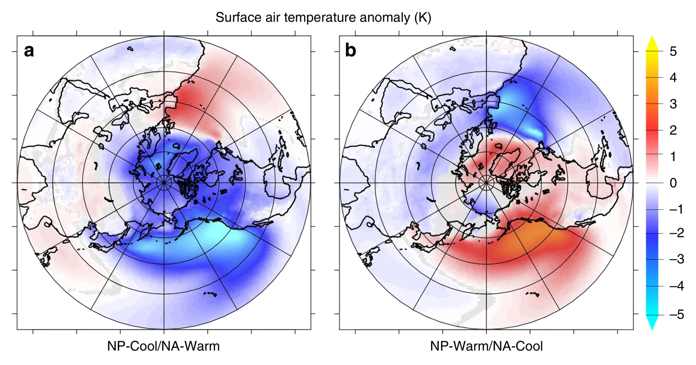

Global and Arctic climate sensitivity enhanced by changes in North Pacific heat flux
Key finding. In a climate model, both positive and negative ocean-to-atmosphere heat flux perturbations in the North Pacific produced larger global and Arctic surface air temperature anomalies than perturbations of equal magnitude in the North Atlantic, implying that global climate sensitivity depends on the zonal pattern of northern hemisphere ocean heat flux and not only on its total.

What question did this research address?
The Arctic warms faster than the rest of the planet, through a combination of surface albedo, cloud, and temperature feedbacks together with heat carried poleward by the ocean and atmosphere. How much each of these contributes is not well constrained.
One under-examined dimension is longitude: the northern hemisphere ocean is not zonally uniform, and heat entering the atmosphere over the North Pacific need not have the same effect as heat entering over the North Atlantic.
This work asked whether the Arctic, and the planet as a whole, are equally sensitive to ocean heat flux perturbations from those two basins.
What did we find?
Ocean-to-atmosphere heat fluxes were modified in the North Pacific and in the North Atlantic in turn, in both directions, so the comparison isolates basin location from the sign and size of the perturbation.
North Pacific perturbations produced the larger global and Arctic temperature response in every case, whether the perturbation added heat or removed it.
The mechanism is moisture rather than heat alone. Perturbations in the North Pacific drive greater moisture flux from the subpolar extratropics into the Arctic, and the resulting poleward latent heat and moisture transport is what carries the signal north.
Two Arctic feedbacks then amplify it: the added moisture and heat drive sea-ice retreat, engaging the ice-albedo feedback, and promote low-cloud formation, which warms the surface through the infrared effect of those clouds.
Why does it matter?
Climate sensitivity is usually treated as a property of the planet as a whole. This result makes part of it contingent on where ocean heat surfaces, which means the same global forcing can produce different warming depending on the ocean circulation pattern of the moment.
It gives a physical reason to expect Arctic amplification to vary as North Pacific conditions vary, rather than tracking global mean temperature alone.
For interpreting the paleoclimate record, where North Pacific heat flux is known to have changed substantially, it supplies a mechanism linking those changes to global and Arctic temperature.
Citation, data, and code
Summer Praetorius, Maria Rugenstein, Geeta Persad, and Ken Caldeira (2018). Global and Arctic climate sensitivity enhanced by changes in North Pacific heat flux. Nature Communications 9, 3124.